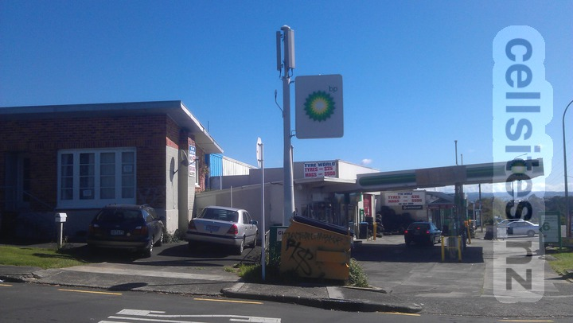
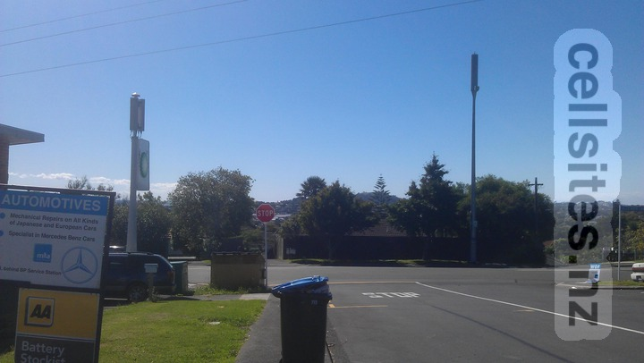
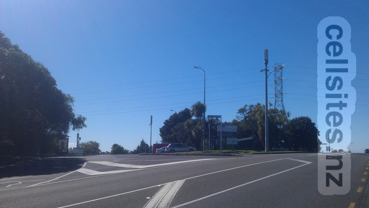
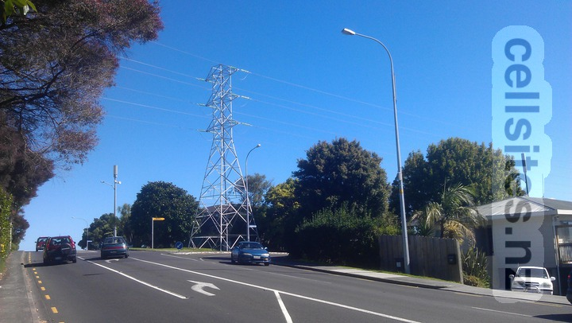
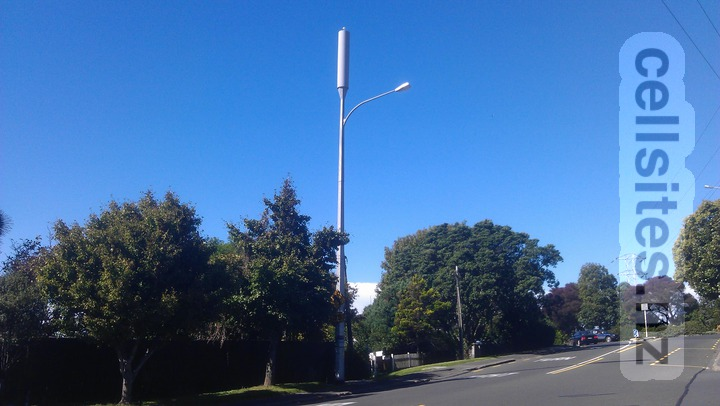
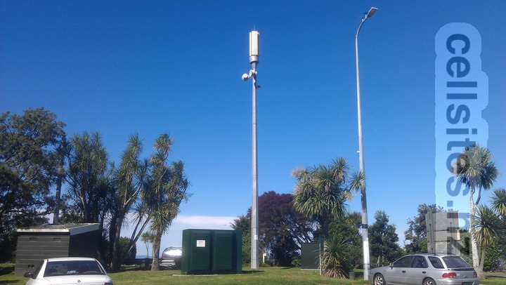
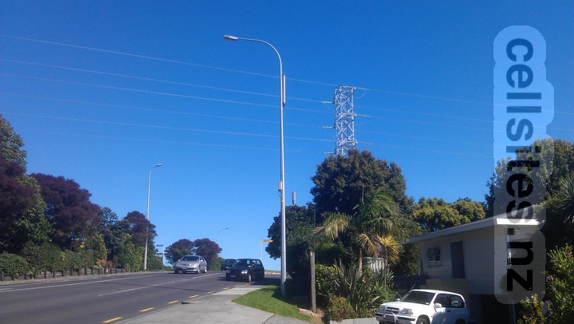

Telecom Hillsborough Road GIS Geek  Original site.  Original site (on left) and replacement site (on right).  Original site (on left) and replacement site (in middle).  Replacement side on far right (behind watermark).  Replacement site.
2degrees Hillsborough ID: AKL-007-104 Code: HILB GIS Geek  2degrees site on right. 2degrees site on far left.
Vodafone Hillsborough Reserve P1 GIS Geek  Vodafone site in middle (on lightpole immediately to the right of the power pylon).